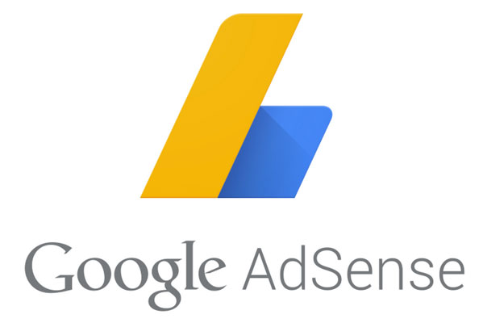
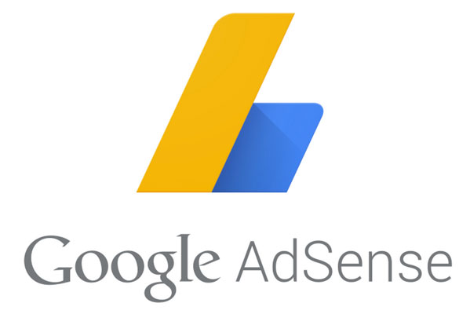

Home > How-to

If you are reading this post, then its pretty sure that you already own a website and want to earn some money by your blogging skills and want to bear the hosting and maintenance cost of your website with that earned money.
We all are aware of the fact Google AdSense is the best contextual Ad program which provides almost 65% of the money from the advertiser to the Ad publishers (or blogger) if their ads are being clicked. It’s the most trusted platform for money making and also for the advertisers to advertise their ads.
Almost every blogger has a dream of being approved by the adsense (the world’s highest paying and trusted money making program). But, Google doesn’t approve all the website application they get. Or we can say that it takes a lot to get approved by the adsense. You have to show the most professional and visitor attractive approaches in your website. Otherwise, they will not even consider your application. They want your website to be as per their policies and guidelines. So, today, I am here to share some of the sure shot ways to get the adsense approval for your blogging website. I myself got the adsense approval in my third chance. As I was a beginner in this process, so I faced a lot of difficulties in getting approved by the adsense. And, that’s why I want to share some of the things to resolve the problems faced by the others while approving their website.
You have to follow all the things which I am mentioning here to get the fast approval :
After doing all these stuffs, apply to Google AdSense at http://google.com/adsense . Sign in here and provide your websites url.
Around 3-4 hours after applying, you will get an email that “ your website has been successfully reviewed”. There is around 90% chances of getting that email if you have followed all the above mentioned steps strictly without any failure.
If you get an email stating “Insufficient content” or any other reason, just don’t panic and try to resolve those stated issues and reapply to the adsense. Most of the artciles on other sites say that if your application is rejected you should reapply after 1 or 2 months. Let me tell you this thing that its pure bullshit. Just follow what Google is advising you by email and reapply again. You will be approved if you did it right.
This part also confused at once, according to the email, you have to place the ad codes right after the “head” tag of your website. And they also mention that you will see blank ads until your account is fully approved. So, how could you get the blank ads if you are putting your ad codes in the head tag. So, let me tell you this thing that don’t get confused and whatever Google asks you to do. It’s the page level ads which are placed in your head section so that adsense could connect to you and then you can place ads in body tags after getting fully approved (you will get an email “Congratulations !! Your adsense account is fully approved”).
I have seen many sites which doesn’t mention this part clearly and just say that you have to put ad codes in the body tag and not in the head tag. Not only these sites, I have seen some of the experts at google forum also which answers this thing without knowing the right question.
So, don’t wander here and there, just follow what google is trying to say in the emails they are sending.
Note: In the second part Google reviews your application personally by their employees. They look for many aspects such as traffic or sometimes alexa ranking too. But if you are not getting much traffic, then also don’t worry about it !! They will approve your application if everything is OK and they find that this site has some potential.
Remember !! Don’t make changes in your layout or design in between the 2nd step approval process. It may cause serious problems.
Second step approval process generally takes 3 days as mentioned by the adsense itself. But, they can approve your site in between that time also. I got my second step approved in just 28 hours. So, indulge yourself in some other work, relax and wait for the approval.
If your application is not approved even after waiting 3-4 days, then, I guess you have done something wrong in placing your ads. Just check it again and clear your mistakes.
Thanks !!
Enjoy Adsense approval !!
Posted by : Ankit Kumar
How to get Google AdSense approved in just 4 to 5 days

If you are reading this post, then its pretty sure that you already own a website and want to earn some money by your blogging skills and want to bear the hosting and maintenance cost of your website with that earned money.
We all are aware of the fact Google AdSense is the best contextual Ad program which provides almost 65% of the money from the advertiser to the Ad publishers (or blogger) if their ads are being clicked. It’s the most trusted platform for money making and also for the advertisers to advertise their ads.
Almost every blogger has a dream of being approved by the adsense (the world’s highest paying and trusted money making program). But, Google doesn’t approve all the website application they get. Or we can say that it takes a lot to get approved by the adsense. You have to show the most professional and visitor attractive approaches in your website. Otherwise, they will not even consider your application. They want your website to be as per their policies and guidelines. So, today, I am here to share some of the sure shot ways to get the adsense approval for your blogging website. I myself got the adsense approval in my third chance. As I was a beginner in this process, so I faced a lot of difficulties in getting approved by the adsense. And, that’s why I want to share some of the things to resolve the problems faced by the others while approving their website.
You have to follow all the things which I am mentioning here to get the fast approval :
- First of all, you should have a clean and attractive design for your website. It must not contain items to be messed all around as it creates difficulty for the user to find their desired items and it will also frustrate the user, decreasing the probability of their returning back to your website. For clean and proper design you may use paid themes available at internet or you can use various web developing platform available on the internet. Some of the examples are ‘bootstrap’, ‘wordpress’, ‘jekyll’, ‘joomla’, etc. They make your design part to be completed easily in very less time.
I created my website without using any themes so, it took me some time for completing the design part as per the Google requirements. But, its your choice. You can use themes or you can do it without any themes (it will help you learn almost all the basic, important and most used part of the HTML, CSS or Javascript). - Your website must be responsive i.e. it should adapt according to different device resolutions. It’s the most important part as most of the users today love to surf through the portable and handy devices such as mobile and tablets. For, responsive design too, your theme can help you a lot otherwise you can use media queries in your CSS to accomplish this task.
- Now, if you are not using any theme, I also recommend you to centerize your website because it leaves a good impression to everybody about your coding styles. You can read my article on How to centerize a website .
- Provide all the important pages like “Privacy Policy, Terms & Conditions, About Us, Contact Us”. Remember !! Don’t miss any of these pages as these pages decide that you care for the users instead of just trying to make money.
Provide a photo in your About Us page and all your details to show that you are genuine. Your Contact Us details should be working properly. If you have provided a form, then cross check it whether it is working property or not. For Privacy Policy, there are many free privacy policy generators available on the net. You can use any of them to generate your website’s privacy policy. I generated it from http://privacypolicies.com . You can use that too. - I recommend you to design a sitemap for your website if your website is large so that google crawlers don’t face difficulty in crawling all the contents of your website without any failure. And, if you are not providing the sitemap, then you should provide a clear navigation to all the pages of your website so that users doesn’t face difficulty in navigating through all your pages.
You would be wondering how to provide proper navigation, right?? But, it’s a simple process. Just, provide all the links such as home, articles, posts, etc in all your pages. You can also provide links to all your posts in a “Recent Posts” section on your homepage or on all the posts pages (if possible). - So, if you are done with all the above parts, then coming to the articles/posts part.
For getting approval easily without taking a lot of time, you should focus on your articles part. - You should have a rich and unique content.
- Just don’t copy contents from other sites and paste it in your website. Only post ideas which emerges from your own mind and write it in your own words because Google is very strict in these copy cat cases. They can easily find that your content is the copied one. So, avoid it.
- Whatever, you post must contain atleast 500 – 600 words. Otherwise, it will be rejected by google stating that your website contains insufficient content.
- I have seen in many of the sites that they recommend having atleast 20-25 posts on your website to be approved. But, I purely deny this thing. Google adsense policies doesn’t contain any such things. They can even approve your website on just one post if its unique and has the potential to attract visitors on your website. So, don’t bother about it, but try to have atleast 3-4 posts in your website. Just try to have some unique idea, take your time and then post.
- Try to make different sections on you website for placing advertisements on your website. And don’t try to place ad codes on little to no content webpages.
Note: Design is the most important part in getting the approval. Otherwise, they will reject your application stating that your website doesn’t follow the Google webmaster’s design policies.
After doing all these stuffs, apply to Google AdSense at http://google.com/adsense . Sign in here and provide your websites url.
Around 3-4 hours after applying, you will get an email that “ your website has been successfully reviewed”. There is around 90% chances of getting that email if you have followed all the above mentioned steps strictly without any failure.
If you get an email stating “Insufficient content” or any other reason, just don’t panic and try to resolve those stated issues and reapply to the adsense. Most of the artciles on other sites say that if your application is rejected you should reapply after 1 or 2 months. Let me tell you this thing that its pure bullshit. Just follow what Google is advising you by email and reapply again. You will be approved if you did it right.
Successful second part approval of Google AdSense
Now, coming to the second part of adsense approval process (Only for those, who got the above mentioned email).This part also confused at once, according to the email, you have to place the ad codes right after the “head” tag of your website. And they also mention that you will see blank ads until your account is fully approved. So, how could you get the blank ads if you are putting your ad codes in the head tag. So, let me tell you this thing that don’t get confused and whatever Google asks you to do. It’s the page level ads which are placed in your head section so that adsense could connect to you and then you can place ads in body tags after getting fully approved (you will get an email “Congratulations !! Your adsense account is fully approved”).
I have seen many sites which doesn’t mention this part clearly and just say that you have to put ad codes in the body tag and not in the head tag. Not only these sites, I have seen some of the experts at google forum also which answers this thing without knowing the right question.
So, don’t wander here and there, just follow what google is trying to say in the emails they are sending.
Note: In the second part Google reviews your application personally by their employees. They look for many aspects such as traffic or sometimes alexa ranking too. But if you are not getting much traffic, then also don’t worry about it !! They will approve your application if everything is OK and they find that this site has some potential.
Remember !! Don’t make changes in your layout or design in between the 2nd step approval process. It may cause serious problems.
Second step approval process generally takes 3 days as mentioned by the adsense itself. But, they can approve your site in between that time also. I got my second step approved in just 28 hours. So, indulge yourself in some other work, relax and wait for the approval.
If your application is not approved even after waiting 3-4 days, then, I guess you have done something wrong in placing your ads. Just check it again and clear your mistakes.
Thanks !!
Enjoy Adsense approval !!
Posted by : Ankit Kumar